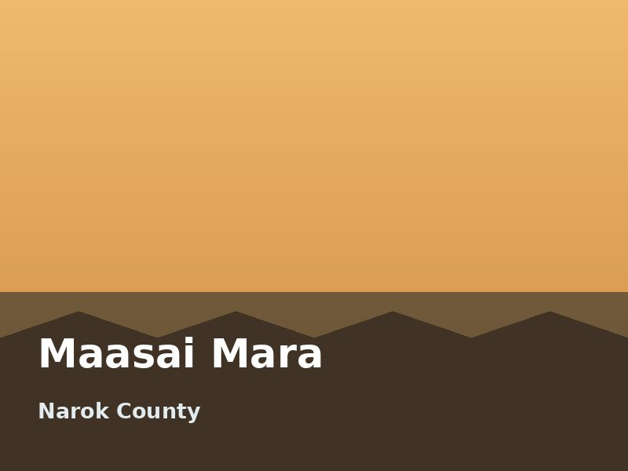
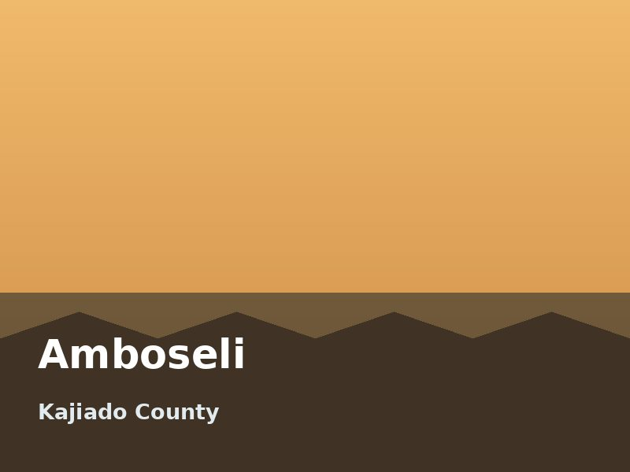
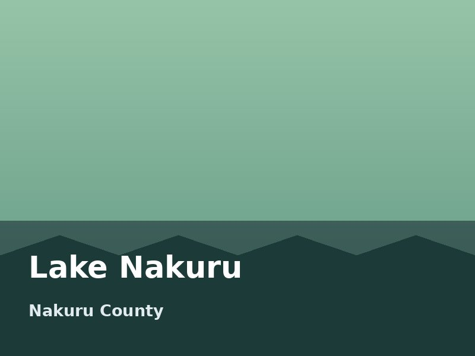
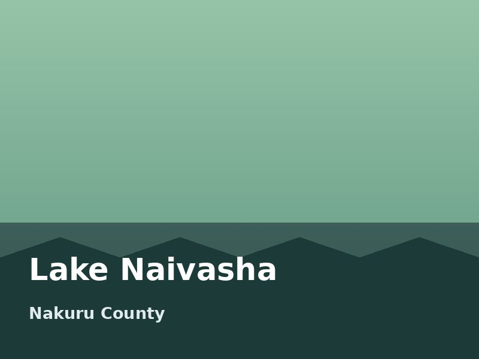
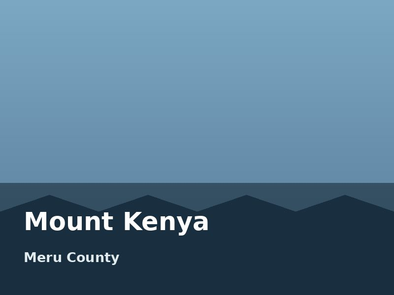
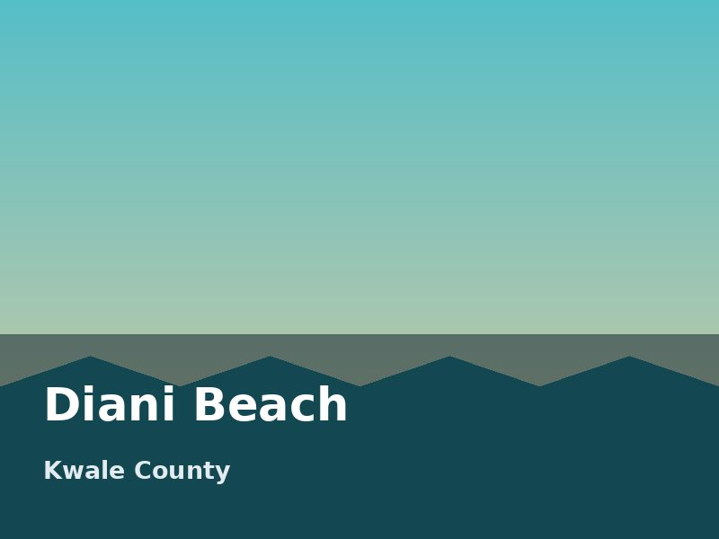
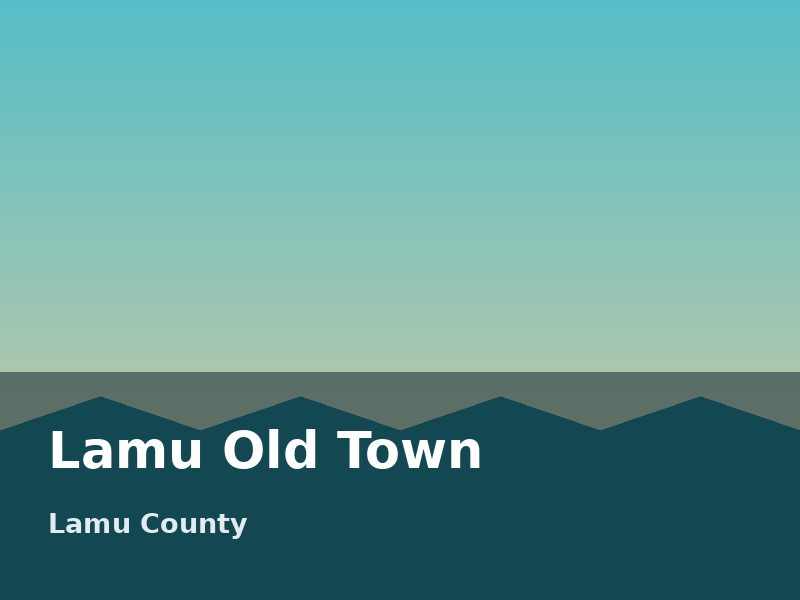
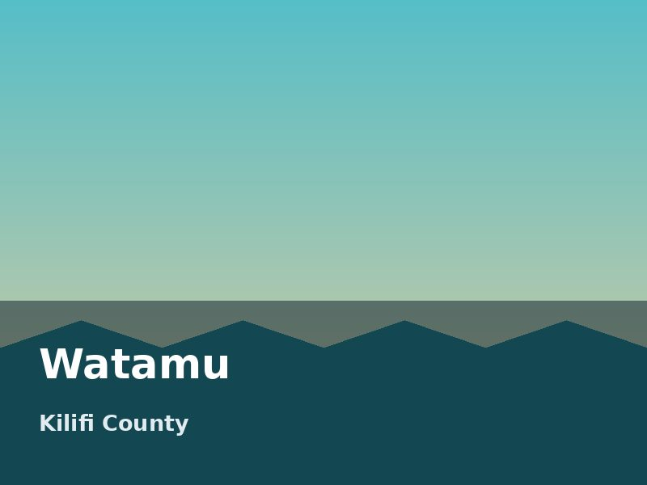

Maasai Mara
Open grassland with the densest big-cat population in Kenya. From July the migration herds arrive and the Mara River crossings begin.
Eight places we send travellers to most often. Every one of them can be reached from Nairobi in a day or less.

Open grassland with the densest big-cat population in Kenya. From July the migration herds arrive and the Mara River crossings begin.

Big elephant herds on a wide dust plain, with Kilimanjaro filling the horizon on clear mornings. Short game drives and enormous skies.

An alkaline lake ringed by flamingos in good years, inside a fenced rhino sanctuary. Good leopard country along the southern shore.

A freshwater lake with hippo-lined shores, dawn boat trips and cycling through the gorges of nearby Hell's Gate. The easiest weekend from Nairobi.

Africa's second-highest peak. Routes climb from bamboo forest through moorland to glacial tarns, and Point Lenana needs no technical climbing.

Twenty kilometres of white sand on the south coast, with a reef close enough to reach by boat before breakfast. Warm water all year.

A UNESCO-listed Swahili town of coral-stone houses, carved doors and dhow harbours. There are no cars — you walk, or you take a donkey.

A marine national park with sheltered snorkelling bays and turtle nesting beaches. Quieter than Diani, and close to Arabuko-Sokoke forest.
| Destination | Region | Best season | Budget per day |
|---|---|---|---|
| Maasai Mara | Savannah | July to October | KSh 19,500 |
| Amboseli | Savannah | June to October | KSh 16,000 |
| Lake Nakuru | Lakes | June to February | KSh 12,000 |
| Lake Naivasha | Lakes | June to October | KSh 7,800 |
| Mount Kenya | Highland | January to February | KSh 10,500 |
| Diani Beach | Coast | July to October | KSh 7,500 |
| Lamu Old Town | Coast | November to March | KSh 8,000 |
| Watamu | Coast | October to April | KSh 9,000 |